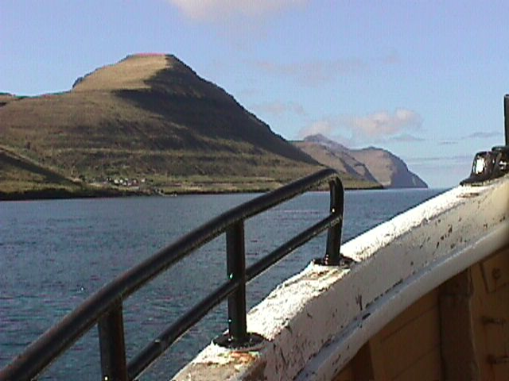

| Nr. | Photo | Time | Upper Caption | Lower Caption | File name |
| 1 |  | 3 | The Faroe Islands 1998 | None | MVC-001F.JPG |
| 2 |  | 3 | The Faroe Islands 1998 | None | MVC-002F.JPG |
| 3 |  | 3 | The Faroe Islands 1998 | None | MVC-003F.JPG |
| Textual index Visual editor Make new photo show | Home |
|
Generated: Wednesday, March 8, 2006, 18:38:02